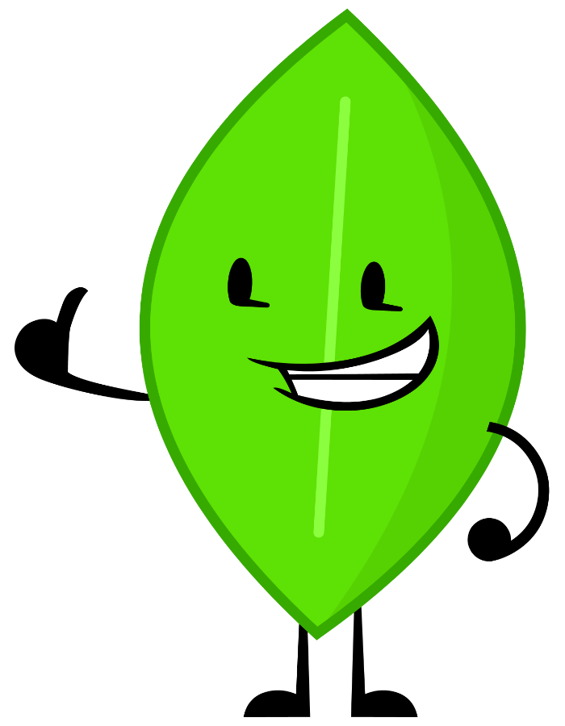
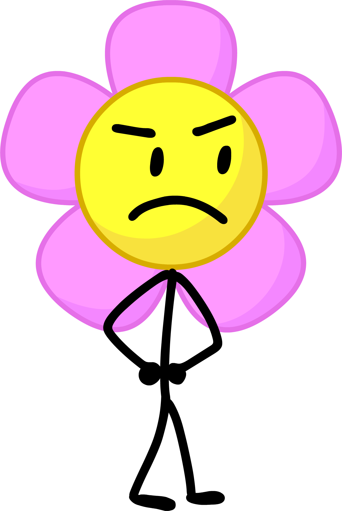
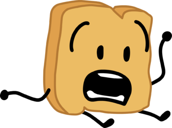
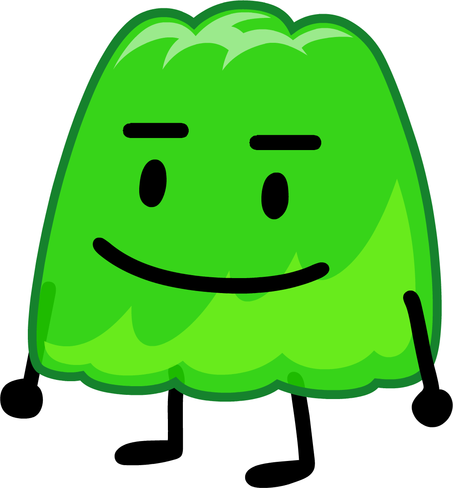

You probably aren't familiar with Battle For BFDI (or BFB for short), but have you ever wondered what the BFB contestants would look like in real life? Most likely not because if you don't even know who they are you wouldn't be able to wonder anything about them. Anyways, this is how all of the BFB contestants would look like in real life. For more information on BFB go their fandom page or their youtube channel
These are the final 6 characters in BFB
| Name | Actual Image | Image - In Real Life | Description | Link to Fandom |
|---|---|---|---|---|
| Leafy |  | |
Leafy is everybody's favorite character! Not just out of the characters in BFB, but out of every single fictional character ever created! Leafy is just simply the best! She has so many good qualities. She's nice, nice, nice, nice, nice, nice, nice and nice! Everybody loves the nice characters, therefore, everybody loves Leafy! But how would she look like in real life? I did some research on how Leafy would look like in our own repulsive world, and I've come to the conclusion that because of all of the disgusting bacteria and fungi, she would instantly perish. | More info |
| Teardrop | |
Teardrop doesn't talk. That's her whole thing. Well, that isn't completely true. Sometimes in scenes where the entire cast is talking, the animators make Teardrop's mouth move for some reason. I'm not sure why they do that, and in my opinion they really shouldn't. It just makes things plain confusing. Anyways, Teardrop is boring and I don't want to talk about her because of that. I'll just show you a picture of how she'd look like in real life and then we can move on to a somewhat more interesting character. | More info | |
| Flower |  | |
Flower is hands down one of the funniest characters in bfb. I'd say that she's the second funniest, only being beaten by everybody's favorite slimy blue amphibious abomination, Four. But what makes Flower so funny? The reason she's made so many people laugh is because in one episode she started dancing out of nowhere because she was bored! Everybody knows that making a character dance or sing out of nowhere is hilarious! Man, the writers of BFB really know what they're doing. I love it when a character starts doing something random out of nowhere. Jokes like that are the highest form of comedy. Now, you're probably expecting to see a normal picture of a flower for Flower right? Well actually, I've decided that if Flower existed in the real world, she'd most likely be a comedian because of how funny she is! | More info |
| Woody |  | |
Woody is one of the more popular characters in BFB. After his abysmal performance in the first 3 seasons, this easily frightened slice of bread has started to face his fears! In the pevious seasons, Woody was known to constantly scream because he was literally terrified of every single atom in the universe, but once BFB started, the writers decided to make him face his fears. You know what else they made him do? They made him dab! You know that hilarious dance move from 5 years ago nobody does anymore? Well Woody did it! He also made all of his teammates dab in an episode! Boy, this guy is hilarious! Like I said earlier with Flower, when a character does something random out of nowhere, it will always be hilarious. Especially if the thing they do is a meme that totally won't die out a week after the joke is made like all other memes do. Now, Woody is often mistaken to be a slice of toast by people when they first watch BFB, so I've decided that if Woody existed in real life, he would be a wooden slice of bread! How appetizing! | More info |
| Gelatin |  | |
Who's this? Oh this is Gelatin. Gelatin is super duper forgettable. What does he even do? He's not extremely nice like Leafy, he's not funny like Flower... Oh right, he does nothing interesting! Gelatin? More like smellatin. Get it? Because he stinks. Gelatin is an 8 year old claustrophobic super hip and trendy dude. He's lime flavored so he's green like Leafy which makes him kind of cool I guess. | More info |
| Lollipop | |
Lollipop's personality has not stayed consistent during BFB. Early in the show Lollipop was an arrogant snob who would insult and judge people by their appearances. She would always talk with super long words in a super duper calm and confident way. But that all changed! The writers seemed to forget what Lollipop's personality was supposed to be like, so they made up a new one for her! Remember when she talked super fancy like and everything? Well she doesn't do that anymore. She refers to Gelatin as "Jelly Boi" and her "sidekick thingy" too, and she even said the word sus! If you didn't know, the word sus is slang for suspicious. The word started to become popular all of the sudden from a game called Among Us that started growing in popularity a lot recently. Isn't it just so great that the writers of BFB are trying to write memes into their episodes now? It's not like they're dating the episodes at all by doing that. So Lollipop went from being the sophisticated fancy character, to the hip one who talks in slang! If you were to take something Lollipop said early in the show, take something she said later in the show and compare the two lines side by side, they'd look like they were spoken by two completely different characters! Anyways, since Lollipop now talks like a super hip cool dude, I've decided that if she existed in real life, she would look like the coolest person on earth. | More info |
And those were all 6 of the remaining BFB characters. There are more but nobody cares about them. The rest are all either boring or unfunny. Maybe if they started using some hip trendy words or started dancing out of nowhere in an episode they'd be on this list, but oh well.
Sources & Credits